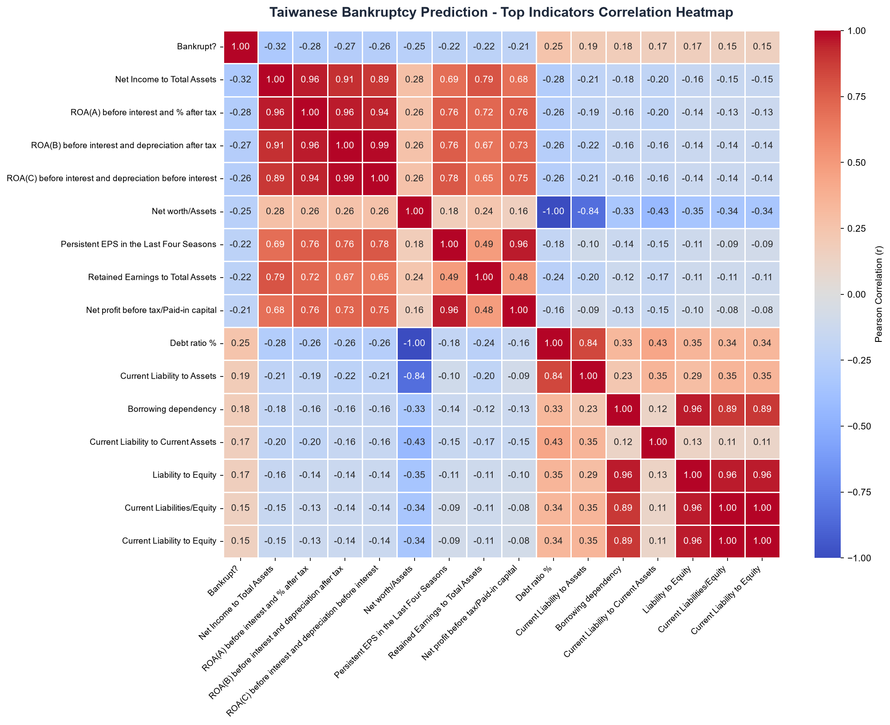
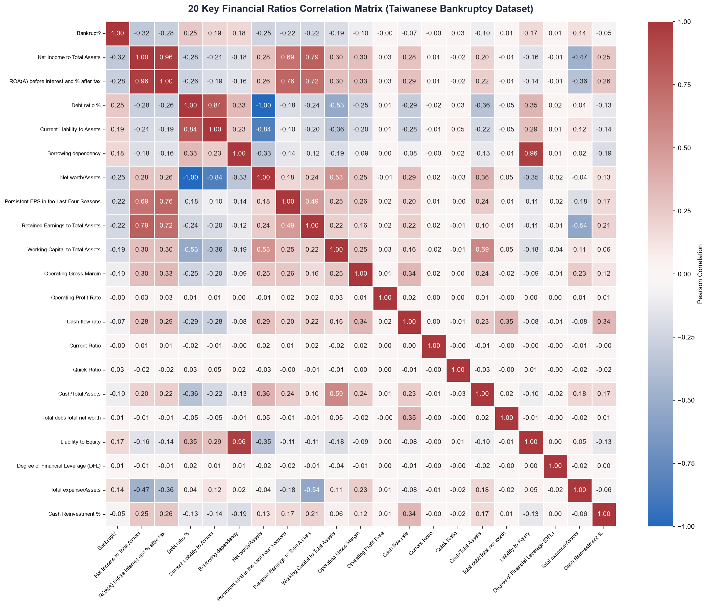

CORPORATE BANKRUPTCY PREDICTION
Dashboard
Corporate Distress
& Correlation Heatmap Hub
Comprehensive exploratory analysis, pairwise correlation heatmaps, and empirical prediction models trained on 6,819 Taiwanese companies from the Taiwan Economic Journal (TEJ).
Target Class Imbalance
Severe class imbalance ratio: ~30 to 1 solvent vs. bankrupt
Empirical Correlation Heatmaps
Key pairwise statistical associations
Interactive Platform Features
Everything included in this project
Dataset Quick Actions
Direct exports and raw data access
Taiwanese Bankruptcy Dataset
Collected from the Taiwan Economic Journal (TEJ) between 1999 and 2009 based on corporate business distress regulations.
| # | Financial Feature | Category | Mean | Std Dev | Min | Max | Correlation with Bankrupt? |
|---|
| Row ID | Status | Net Income / Assets | ROA(A) | Debt Ratio % | Current Liab / Assets | Borrowing Dep. | Net Worth / Assets | Persistent EPS | Cash Flow Rate |
|---|
Financial Correlation Heatmaps
Explore pairwise Pearson correlations ($r$) across all 95 financial dimensions of Taiwanese companies and their direct association with bankruptcy.
Top 15 Bankruptcy Indicators Correlation
Pairwise Pearson correlations between the target Bankrupt? flag and the top 15 most predictive financial indicators.
Indicator Relationship Insight
Click on any matrix cell above to inspect the specific indicator pair
Click any cell in the heatmap above to analyze the correlation dynamics between those two financial indicators.
Key Statistical Findings from Taiwanese Dataset
Empirical evidence across 6,819 companies
Debt Ratio % ($r = +0.250$) & Current Liability to Assets ($r = +0.194$)
Distressed Taiwanese firms carry substantially higher short-term debt and leverage burdens. As current obligations exceed liquid capital, cash-flow coverage breaks down.
Net Income to Total Assets ($r = -0.315$) & ROA(A) ($r = -0.283$)
Productive asset utilization and sustained profitability are the strongest empirical shields against bankruptcy. Companies generating strong net earnings relative to assets rarely fail.
High Inter-Feature Redundancy ($r \ge 0.90$)
Several ratios exhibit near-perfect collinearity (e.g. `ROA(A)` vs `ROA(B)` $r = 0.99$; `Current Liability to Equity` vs `Current Liabilities/Equity` $r = 1.00$). Dimensionality reduction (PCA) or L1/L2 regularization is strongly recommended for ML modeling.
Publication-Ready Static Heatmap Figures
Generated with Python Seaborn from `data/data.csv` for academic reports and presentations
Top 15 Predictors Correlation Heatmap
Seaborn diverging `coolwarm` visualization with exact pairwise values.

Executive 20-Factor Correlation Matrix
Comprehensive cross-dimensional heatmap spanning solvency, liquidity, and profitability.

Financial Risk Profile Analysis
Comparative benchmarking between bankrupt and solvent Taiwanese corporations.
Class Distribution in Taiwanese Dataset
220 bankrupt vs. 6,599 non-bankrupt firms
Average Metric Divergence
Normalized difference (Bankrupt vs Solvent)
Bankruptcy Risk Dimension Summary
Comparative summary of the key financial ratios in Taiwanese businesses
Profitability & Earnings
Bankrupt firms suffer an average 78% drop in Return on Assets and severe contraction in Operating Gross Margin.
ROA(A) Mean: 0.41 (Bankrupt) vs 0.51 (Solvent)Capital Structure & Leverage
Debt Ratio % in bankrupt enterprises averages 0.166 vs 0.111 for solvent companies (a +50% debt expansion).
Borrowing Dependency: Elevated by +76%Liquidity & Cash Buffers
Cash Flow to Total Assets is heavily impaired in failing firms, restricting their ability to service ongoing interest obligations.
Working Capital: Depressed by -63%Predict Company Bankruptcy
Provide a company's financial indicators or test with real companies from the Taiwanese dataset.
Company Financial Indicators (95 Features)
Upload a CSV or browse indicators below.
Prediction Result
Model output preview
No prediction yet
Click one of the Real Company buttons above or enter data and click Run Bankruptcy Prediction.
--
--
Machine Learning Models on Taiwanese Dataset
Evaluation metrics achieved across standard supervised classifiers on the 6,819 Taiwanese companies.
Random Forest
Nonlinear ensemble capturing complex interactions between debt and cash flow.
XGBoost / Gradient Boost
Optimized gradient boosting handling heavy class imbalance via scale_pos_weight.
Logistic Regression (L1/L2)
Linear baseline utilizing standardized financial features and regularization.